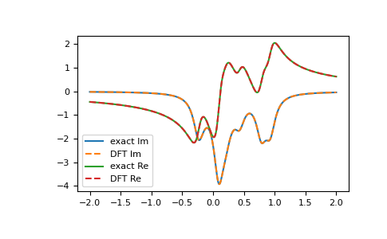
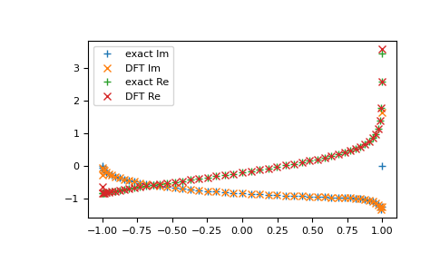
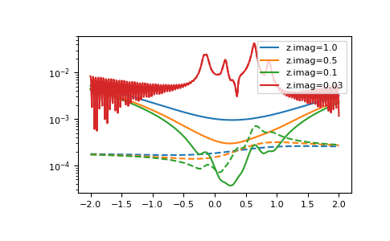

gftool.fourier.tt2z¶
-
gftool.fourier.tt2z(tt, gf_t, z, laplace=<function tt2z_lin>)[source]¶ Laplace transform of the real-time Green’s function gf_t.
Calculate the Laplace transform
\[G(z) = ∫dt G(t) \exp(izt)\]For the Laplace transform to be well defined, it should either be tt>=0 and z.imag>=0 for the retarded Green’s function, or tt<=0 and z.imag<=0 for the advance Green’s function.
The retarded (advanced) Green’s function can in principle be evaluated for any frequency point z in the upper (lower) complex half-plane.
The accented contours for tt and z depend on the specific used back-end laplace.
- Parameters
- tt(Nt) float np.ndarray
The points for which the Green’s function gf_t is given.
- gf_t(…, Nt) complex np.ndarray
Green’s function and time points tt.
- z(…, Nz) complex np.ndarray
Frequency points for which the Laplace transformed Green’s function should be evaluated.
- laplace{
tt2z_lin,tt2z_trapz}, optional Back-end to perform the actual Fourier transformation.
- Returns
- gf_z(…, Nz) complex np.ndarray
Laplace transformed Green’s function for complex frequencies z.
- Raises
- ValueError
If neither the condition for retarded or advanced Green’s function is fulfilled.
See also
tt2z_trapzBack-end: approximate integral by trapezoidal rule
tt2z_linBack-end: approximate integral by Filon’s method
Examples
>>> tt = np.linspace(0, 150, num=1501) >>> ww = np.linspace(-2, 2, num=501) + 1e-1j
>>> poles = 2*np.random.random(10) - 1 # partially filled >>> weights = np.random.random(10) >>> weights = weights/np.sum(weights) >>> gf_ret_t = gt.pole_gf_ret_t(tt, poles=poles, weights=weights) >>> gf_ft = gt.fourier.tt2z(tt, gf_ret_t, z=ww) >>> gf_ww = gt.pole_gf_z(ww, poles=poles, weights=weights)
>>> import matplotlib.pyplot as plt >>> __ = plt.plot(ww.real, gf_ww.imag, label='exact Im') >>> __ = plt.plot(ww.real, gf_ft.imag, '--', label='DFT Im') >>> __ = plt.plot(ww.real, gf_ww.real, label='exact Re') >>> __ = plt.plot(ww.real, gf_ft.real, '--', label='DFT Re') >>> __ = plt.legend() >>> plt.show()
The function Laplace transform can be evaluated at abitrary contours, e.g. for a semi-ceircle in the the upper half-plane. Note, that close to the real axis the accuracy is bad, due to the truncation at max(tt)
>>> z = np.exp(1j*np.pi*np.linspace(0, 1, num=51)) >>> gf_ft = gt.fourier.tt2z(tt, gf_ret_t, z=z) >>> gf_z = gt.pole_gf_z(z, poles=poles, weights=weights)
>>> import matplotlib.pyplot as plt >>> __ = plt.plot(z.real, gf_z.imag, '+', label='exact Im') >>> __ = plt.plot(z.real, gf_ft.imag, 'x', label='DFT Im') >>> __ = plt.plot(z.real, gf_z.real, '+', label='exact Re') >>> __ = plt.plot(z.real, gf_ft.real, 'x', label='DFT Re') >>> __ = plt.legend() >>> plt.show()
Accuracy of the different back-ends:
For large z.imag,
tt2z_linperforms better.For intermediate z.imag, the quality depends on the relevant z.real. For small z.real, the error of
tt2z_trapzis more uniform; for big z.real,tt2z_linis a good approximation.For small z.imag, the methods are almost identical, the truncation of tt dominates the error.
>>> import matplotlib.pyplot as plt >>> for ii, eta in enumerate([1.0, 0.5, 0.1, 0.03]): ... ww.imag = eta ... gf_ww = gt.pole_gf_z(ww, poles=poles, weights=weights) ... gf_trapz = gt.fourier.tt2z(tt, gf_ret_t, z=ww, laplace=gt.fourier.tt2z_trapz) ... gf_lin = gt.fourier.tt2z(tt, gf_ret_t, z=ww, laplace=gt.fourier.tt2z_lin) ... __ = plt.plot(ww.real, abs((gf_ww - gf_trapz)/gf_ww), ... label=f"z.imag={eta}", color=f"C{ii}") ... __ = plt.plot(ww.real, abs((gf_ww - gf_lin)/gf_ww), '--', color=f"C{ii}") ... __ = plt.legend() >>> plt.yscale('log') >>> plt.show()

{kind=link}
{kind=link}
{kind=link}